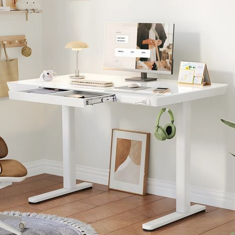

I was worried that a standing desk would slow me down, but it’s actually the opposite. I feel
more productive and focused when I’m on my feet. It’s also great for my posture, and I’ve
noticed that my usual end-of-day fatigue is gone. Worth every penny!

John
California
This desk is a lifesaver! I used to sit for hours at a time, and it was really affecting my
energy levels and mood. Now that I alternate between sitting and standing, I feel more energized
and less stressed. It’s also helped me shed a few pounds, which is a nice perk!

Linda
New York
After suffering from chronic neck and back pain, I decided to try this standing desk. Within a
few weeks, my pain had decreased significantly. It’s comfortable to use, and the build quality
is excellent. I’m really happy with this purchase.

David
Texas
This standing desk has been a game-changer! I’ve been using it for a few months, and the
difference is incredible. My energy levels have shot up, and I’m burning more calories without
even trying. I never realized how sitting all day was affecting my health until I switched.
Highly recommend

Jessica
Arizona
As someone managing type 2 diabetes, this standing desk has really helped me keep my blood sugar
levels steady. Standing after lunch has significantly reduced my sugar spikes, and I feel so
much better throughout the day. It’s well worth the investment.

Rachel
Florida
What a fantastic desk! The fact that standing can burn an extra 170 calories a day is
mind-blowing. It fits perfectly in my home office, and the setup was quick and easy. I’ve lost a
few pounds since I started using it, which was a pleasant surprise
